Projekte
35 Bauten und Entwürfe aus dem Werk von Brückner Architekten.
Alle Projekte

Alpenwerk, Raubling

Amperauen, Moosburg
Generationenquartier Bayern, Freising
Astyx Campus, Ottobrunn
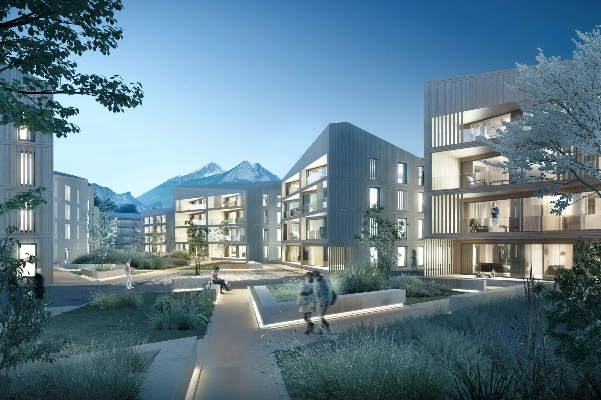
Bad Ragaz , Schweiz
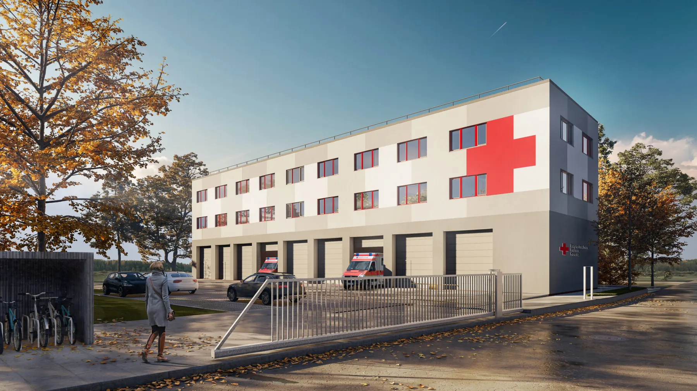
BRK, Unterschleißheim

Carl-Meinelt-Viertel, Bamberg

Denisstraße, München
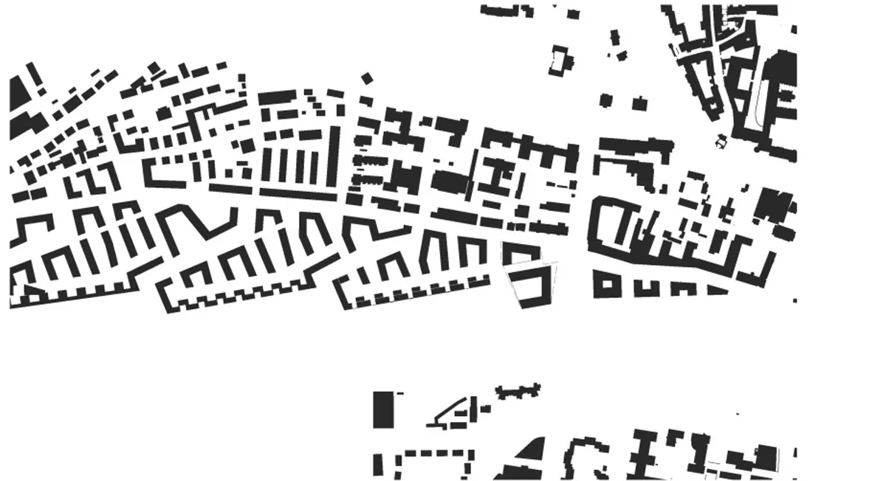
Dörnberg Viertel, Regensburg
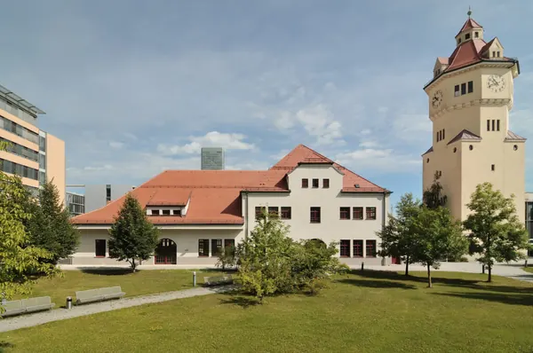
Gaszählerwerkstätte, München
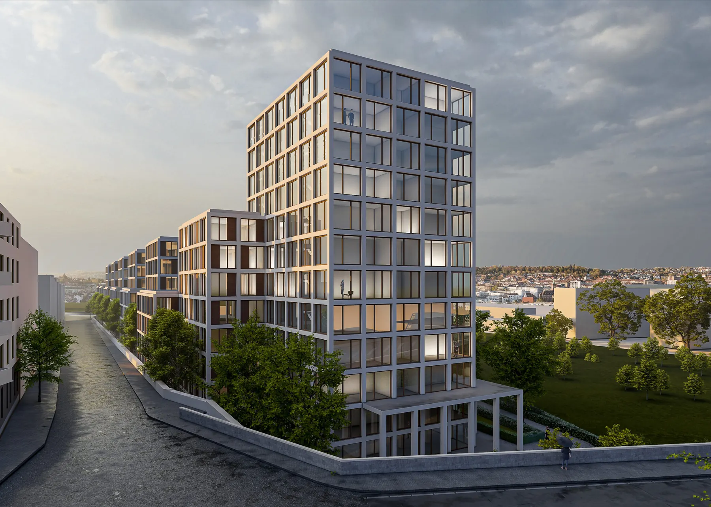
Güterbahnhof, Pforzheim

Herbarium, Pasing

Hirschparkterrassen, München
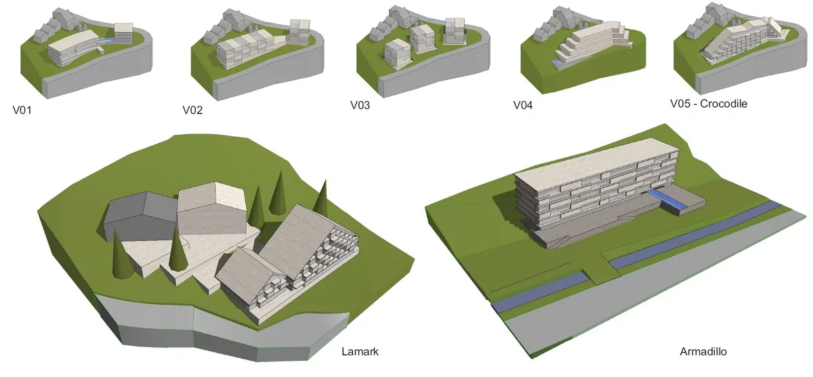
Hochfügen
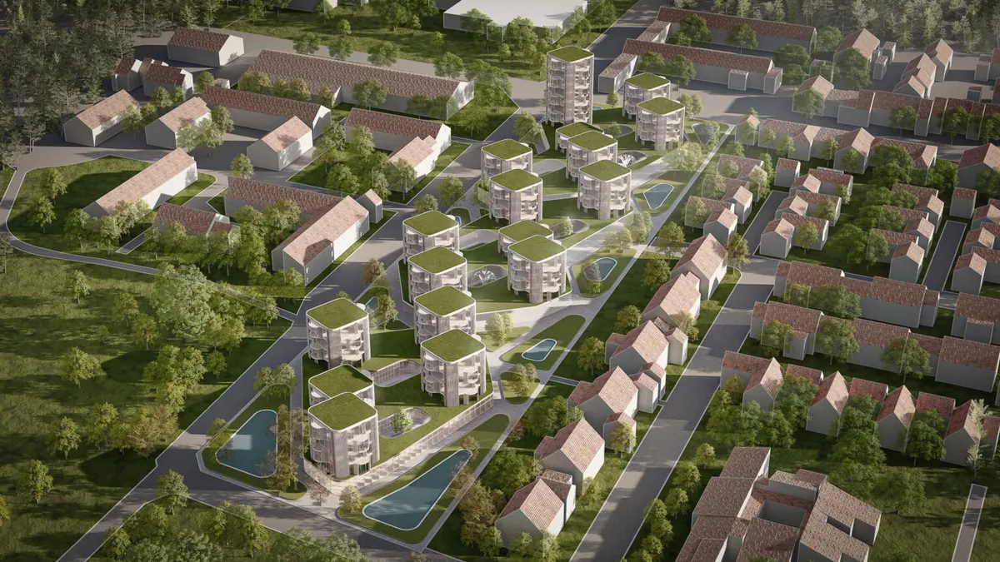
Insel der Sinne

IQ Intelligentes Ingenieur Management GmbH, Nürnberg
IQ Intelligentes Ingenieur Management GmbH – Penthouse, Nürnberg

Kathrein Werksviertel, Rosenheim
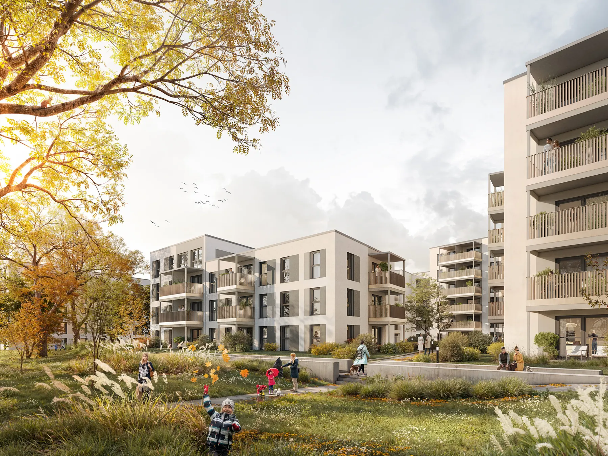
LBS, Landshut
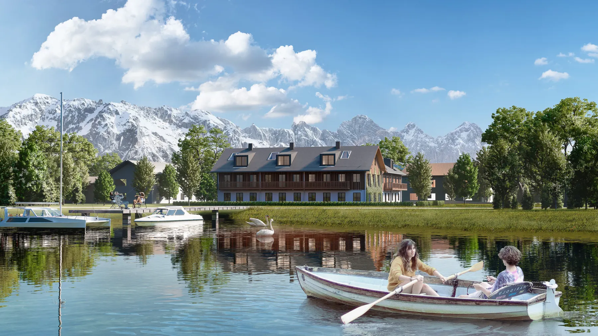
Lieblgut, Grünwald

Meine Volksbank Raiffeisenbank, Rosenheim
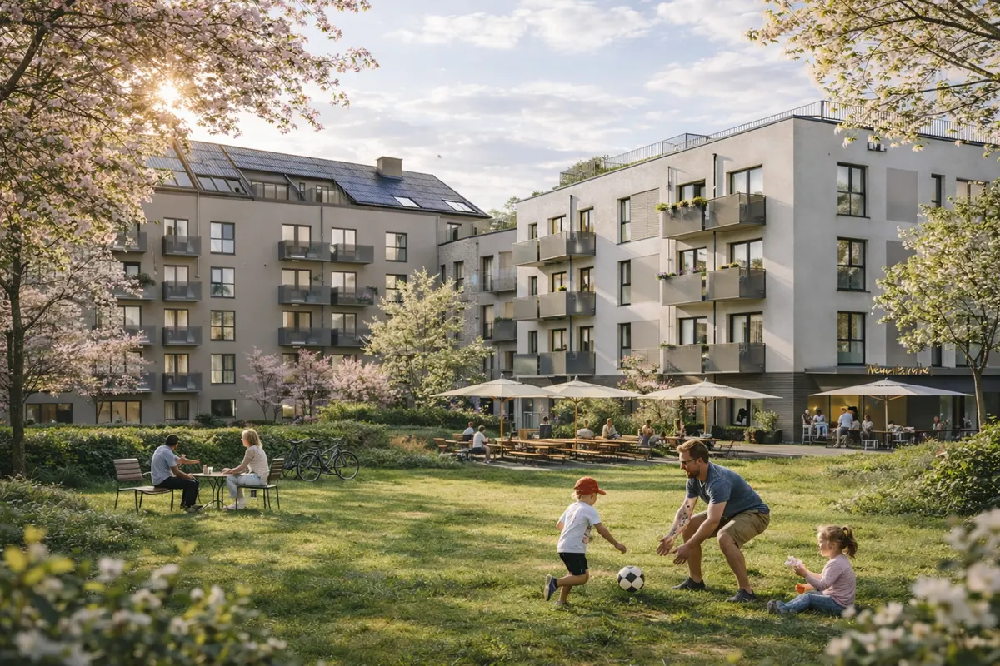
Weyprechthof, Milbertshofen
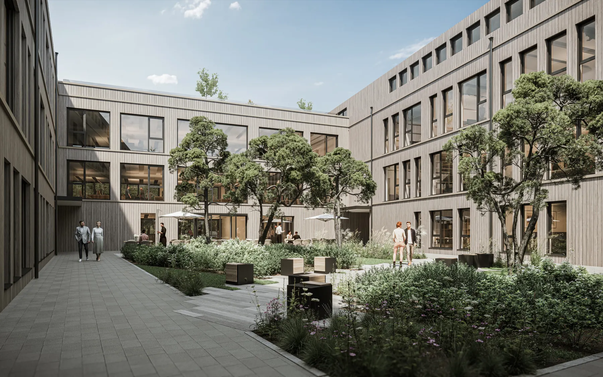
Oha Works, Oberhaching

TÜV SÜD, München
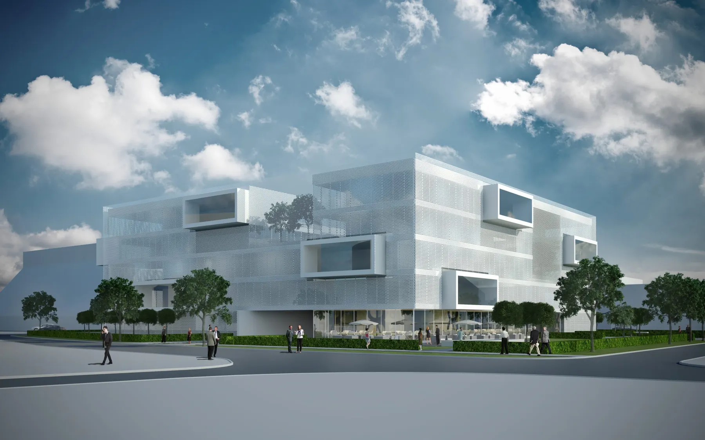
Neue Mitte, Bavaria
Office Campus, München
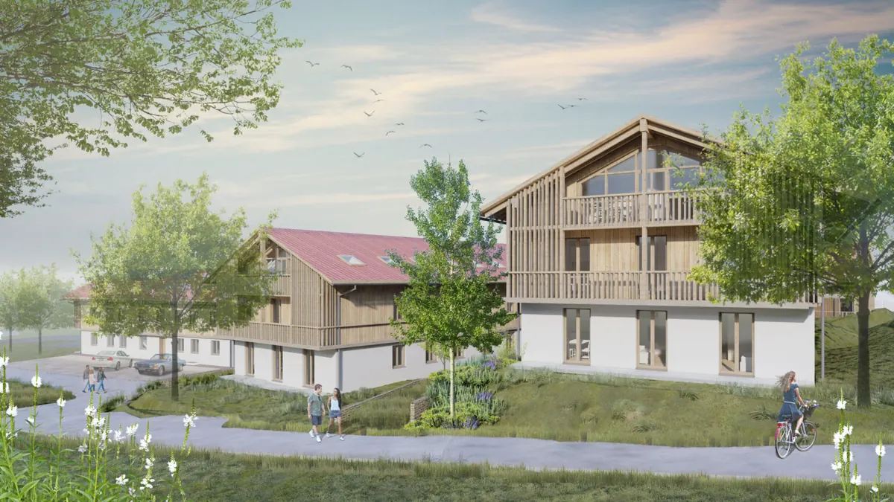
Piesenkam

REMS GmbH & Co. KG, Waiblingen

Grünwalder Einkehr, München
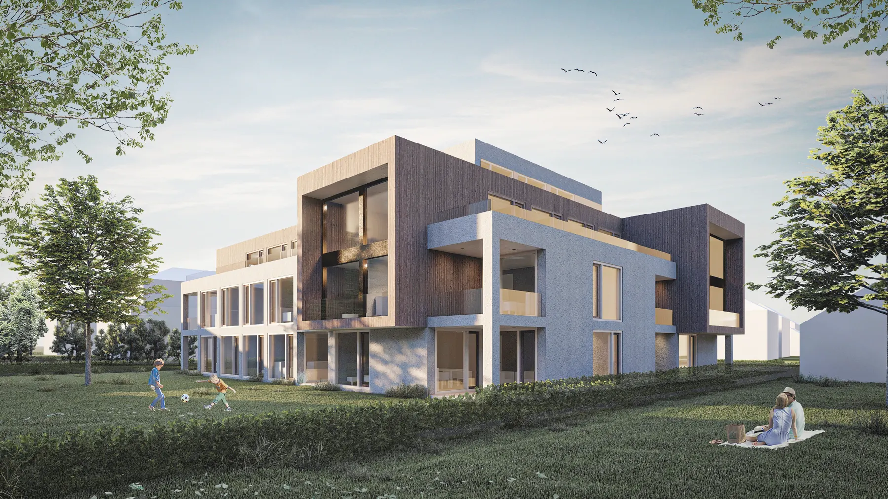
Schillerstraße, Rosenheim

Showroom Shine On, Oberaudorf
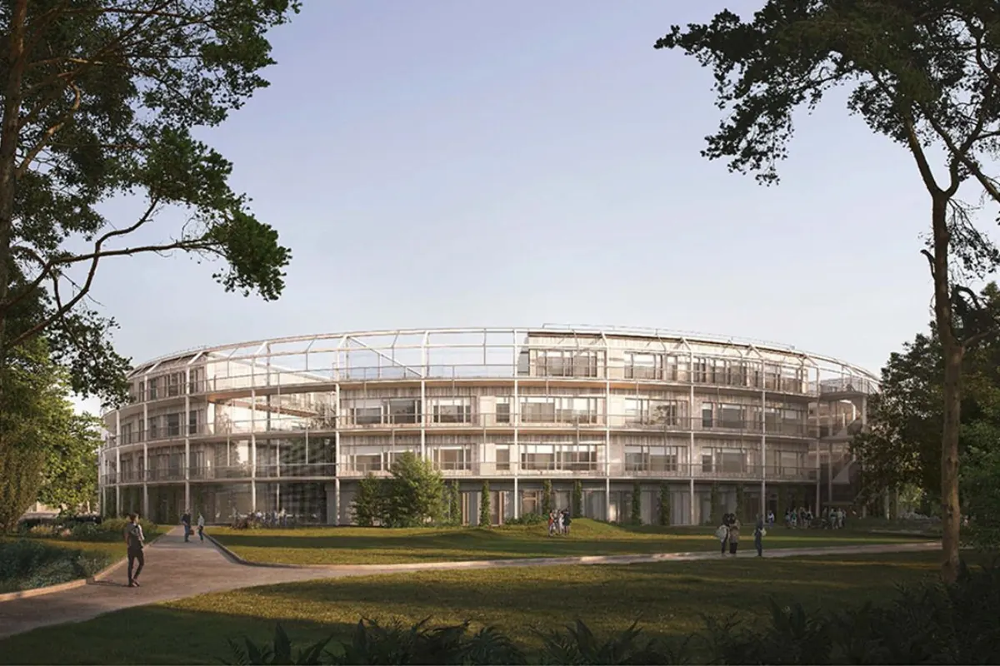
Sportcampus, München

TH Rosenheim_ Architektur und Bildung im Einklang
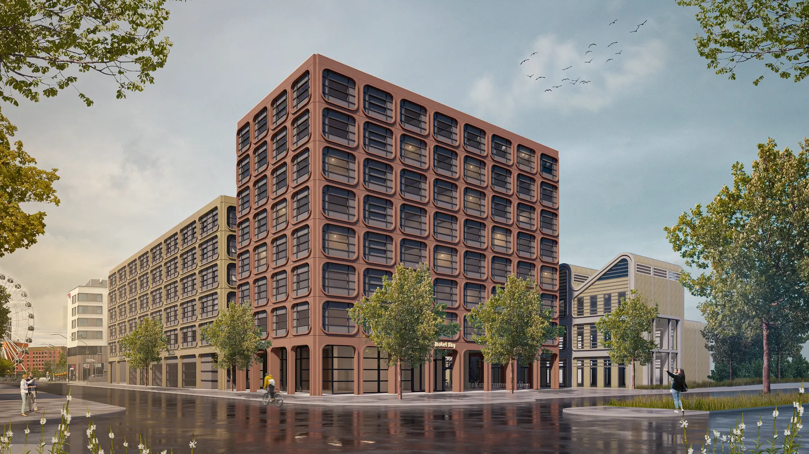
The Sky and the Sand, Wettbewerb, Werksviertel München
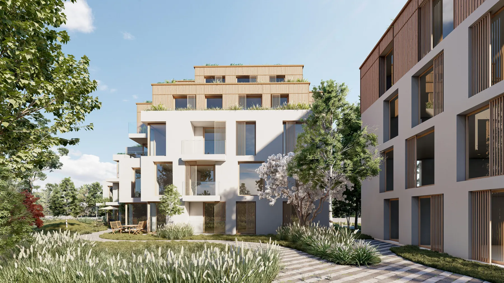
Urban Garden 44, München
Wir haben Ihr Interesse geweckt?
Sie haben Fragen oder wollen einen Termin mit uns vereinbaren?